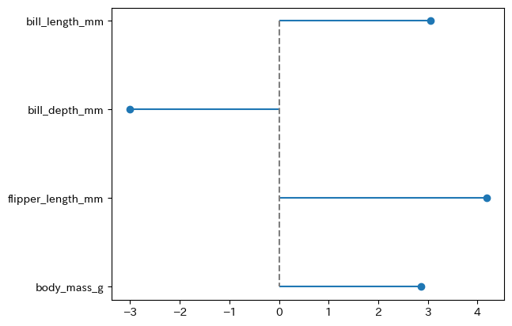
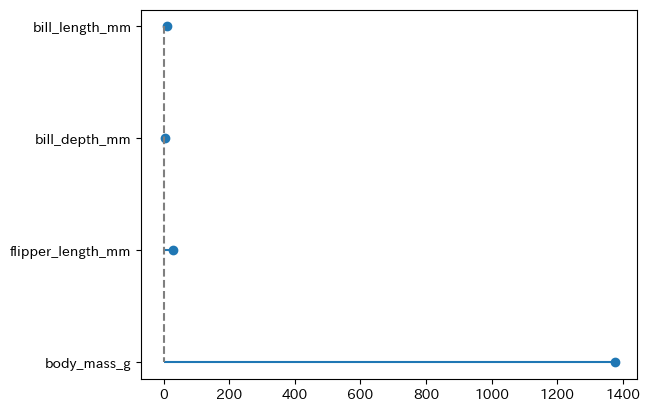

15 統計量に基づくグループ間比較
15.1 概要
これら関数は、入力された2つのデータフレームについて、各数値変数の統計量に基づいた比較を提供します。
compare_group_means(
group1: IntoFrameT,
group2: IntoFrameT,
group_names: Sequence[str] = ('group1', 'group2'),
columns: Literal['common', 'all'] = 'all',
to_native: bool = True
)
compare_group_median(
group1: IntoFrameT,
group2: IntoFrameT,
group_names: Sequence[str] = ('group1', 'group2'),
columns: Literal['common', 'all'] = 'all',
to_native: bool = True
)
plot_mean_diff(
group1: IntoFrameT,
group2: IntoFrameT,
stats_diff: Literal["norm_diff", "abs_diff", "rel_diff"] = "norm_diff",
ax: Optional[Axes] = None,
)
plot_median_diff(
group1: IntoFrameT,
group2: IntoFrameT,
stats_diff: Literal["abs_diff", "rel_diff"] = "rel_diff",
ax: Optional[Axes] = None,
)15.2 引数 Argument
group1（必須）a pandas.DataFrame
数値変数を含む pandas.DataFrame でgroup2との比較対象となるものgroup2（必須）a pandas.DataFrame
数値変数を含む pandas.DataFrame でgroup1との比較対象となるものgroup_nameslist of str
表頭に表示するグループの名前。['group1', 'group2']のように、2つの要素をもつ文字列のリストとして指定してください。columnsstr
2つのグループの結果を結合する際に含める変数を指定します。"common": 両方のグループに存在する変数のみが含まれます。"all": いずれかのグループに存在する全ての変数が含まれます。この場合、一方のグループにのみ存在する変数についての差分統計量は、欠損値（例：NaNまたはNone）となります。
to_native（bool, optional）
Trueの場合、入力と同じ型のデータフレーム（e.g. pandas / polars / pyarrow）を返します。
Falseの場合、narwhals.DataFrameを返します。デフォルトはTrueで、to_native = Falseは、主にライブラリ内部での利用や、backendに依存しない後続処理を行う場合を想定したオプションです。stats_diff: str （plot_mean_diff()およびplot_median_diff()のみ）
グラフの描画に使用する差分統計量。'norm_diff'（plot_mean_diff()のみ）、'abs_diff','rel_diff'のいずれかから選ぶことができます。
15.3 返り値 Value
compare_group_means()関数および, compare_group_median() 関数では、次の値をもつ pandas.DataFrame が出力されます。
group1, group2（初期設定の場合）
各グループにおける記述統計統計量の値norm_diff（compare_group_means()のみ）
標準化された平均値の差で、2つのグループの平均値を \(\bar{X}_1\), \(\bar{X}_2\)、分散を \(s^2_1, s^2_2\) とし、サンプルサイズを \(n_1, n_2\) とするとき、次式のように定義されます。
\[ \delta = \frac{\bar{X}_1 - \bar{X}_2}{s},~~~~~ s^2 = \frac{(n_1-1)s_1^2 + (n_2-1)s_2^2}{n_1 + n_2 - 2} \]
abs_diff
2つのグループの記述統計量の絶対差rel_diff
2つのグループの記述統計量の相対差。2つのグループの記述統計量を \(\bar{X}_1\), \(\bar{X}_2\) とするとき、次式のように定義されます。
\[ \delta = \cfrac{\bar{X}_1 - \bar{X}_2}{\cfrac{\bar{X}_1 + \bar{X}_2}{2}} = 2 \cdot \frac{\bar{X}_1 - \bar{X}_2}{\bar{X}_1 + \bar{X}_2} \]
plot_mean_diff() 関数および, plot_median_diff() 関数では、グループ別の記述統計両の差をグラフとして可視化します。詳細は使用例を参照して下さい。
15.4 使用例 Examples
import pandas as pd
import py4stats as py4st
from palmerpenguins import load_penguins
penguins = load_penguins().drop('year', axis = 1) # サンプルデータの読み込みres1 = py4st.compare_group_means(
penguins.query('species == "Gentoo"'),
penguins.query('species == "Adelie"')
)
print(res1.round(3))
#> variable group1 group2 norm_diff abs_diff rel_diff
#> 0 bill_depth_mm 14.982 18.346 -3.012 3.364 -0.202
#> 1 bill_length_mm 47.505 38.791 3.048 8.713 0.202
#> 2 body_mass_g 5076.016 3700.662 2.868 1375.354 0.313
#> 3 flipper_length_mm 217.187 189.954 4.180 27.233 0.134res2 = py4st.compare_group_median(
penguins.query('species == "Gentoo"'),
penguins.query('species == "Adelie"'),
group_names = ['Gentoo', 'Adelie']
)
print(res2.round(3))
#> variable Gentoo Adelie abs_diff rel_diff
#> 0 bill_depth_mm 14.982 18.346 3.364 -0.202
#> 1 bill_length_mm 47.505 38.791 8.713 0.202
#> 2 body_mass_g 5076.016 3700.662 1375.354 0.313
#> 3 flipper_length_mm 217.187 189.954 27.233 0.134py4st.plot_mean_diff(
penguins.query('species == "Gentoo"'),
penguins.query('species == "Adelie"'),
stats_diff = 'norm_diff'
)
py4st.plot_mean_diff(
penguins.query('species == "Gentoo"'),
penguins.query('species == "Adelie"'),
stats_diff = 'abs_diff'
)
py4st.plot_median_diff(
penguins.query('species == "Gentoo"'),
penguins.query('species == "Adelie"'),
stats_diff = 'rel_diff'
)